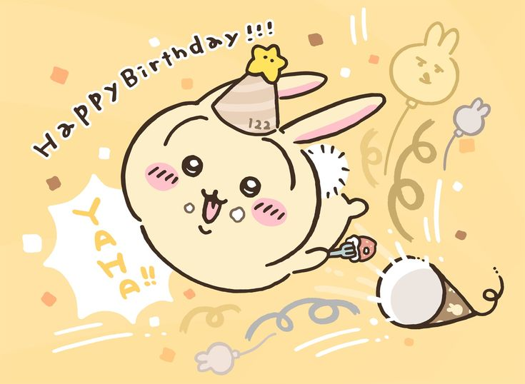

울 아리니 생일 축하해 ❤️
Happy Arin Day 🎉🎉
안녕 아린이!!
벌써 울 예쁜 아린이와 함께하는 두번째 생일이네!! 시간 진짜 엄청 빠르다 그치??
아린이를 처음 만났을 땐 24살이었는데, 벌써 20대 중간까지 왔네....
그래도 아린이랑 함께라서 넘 좋당 크크
요즘 나도 그렇고 아린이도 그렇고 서로 개강하고 할 것도 많아져서 그런지 자주 못 봐서 넘넘 속상해 ㅠㅡㅠ 사실 천안에 있는 나 때문이 제일 크지만...ㅎㅎ
요즘 국시 준비하면서 열심히 하는 아린이를 보면 정말 너무너무 기특하고 멋있어. 한편으로는 많이 스트레스받는 것 같아서 내가 다 속상하기도 하구... 그치만 늘 그랬던 것처럼 아린이는 잘 해낼 거라고 믿어. 그러니까 너무 걱정하지 말고 기죽지도 마 이쁘나 ㅎㅎ
나는 요즘 책상에 앉기도 힘들고 집중도 잘 안 되는데, 이번에는 내가 반대로 아린이를 보면서 열심히 힘내볼게! 서로 각자 할 일 열심히 하면서 힘내보자 우리 ㅎㅎ
그리구 아린이가 나한테 최근에 준 편지를 읽고 정말 많은 생각을 했어. 최근에 나도 혼자 이런저런 생각에 빠지면서 내 마음,우리 관계에 대해 다시 생각해보게 됐었당...
그치만!!! 이런 시간을 또 겪어 보니까 아린이가 얼마나 소중한지 더 잘 알게 됐어 비가 오고 나면 땅이 굳듯이 이번에도 잘 이겨내고, 서로의 소중함을 더 알아가는 계기가 된 것 같아서 다행이라고 생각해 ㅎㅎ
아린이도 언젠가 나와같은 시기가 올 수도 있겠지?? 그럴 때는 혼자 고민하지 말고 서로 솔직하게 이야기하기로 하자. 아린이 말대로 오래 만난 만큼 예전 같은 설렘은 조금 다를 수도 있겠지만, 나도 지금의 우리가 진짜 사랑을 하고 있다고 생각해. 그러니까 우리 앞으로도 오래오래 이쁘게 만나보자!! 내가 더 잘할게 ㅎㅎ
암튼 이런 밤티 얘기는 그만하구
울 아린공주님 생일 진짜 너무너무 축하해 ~~🎉🎉 우리 둘 다 생일이 똑같은건 진짜 넘 신기해 우린 운명이야~~
앞으로 내년, 내후년, 그리고 늙크크가 되는 그날까지
아린이 생일은 내가 제일 먼저 축하할거야.
세상에서 제일 이쁘고 귀엽고 깜찍하고 섹시하고 매력둥이인 아린이!!
세상에서 제일 사랑하고,
다시 한번 생일 진짜 너무 축하해❤️